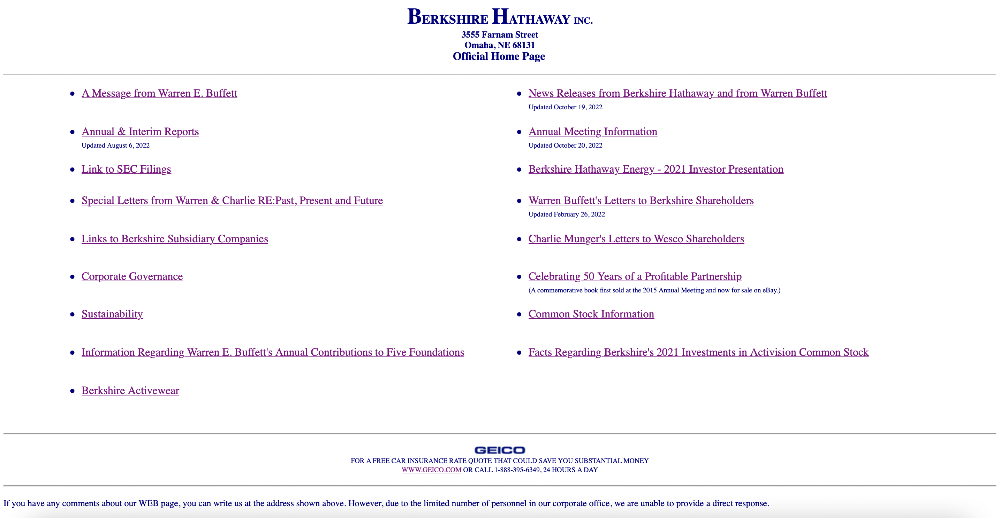
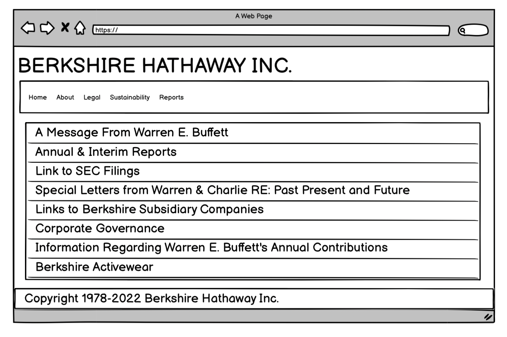
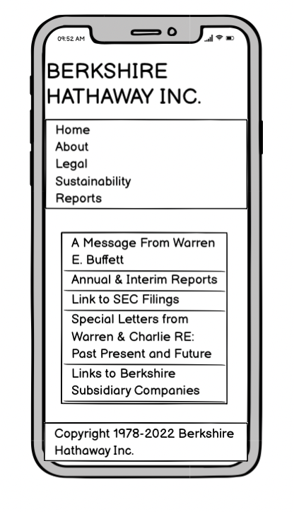
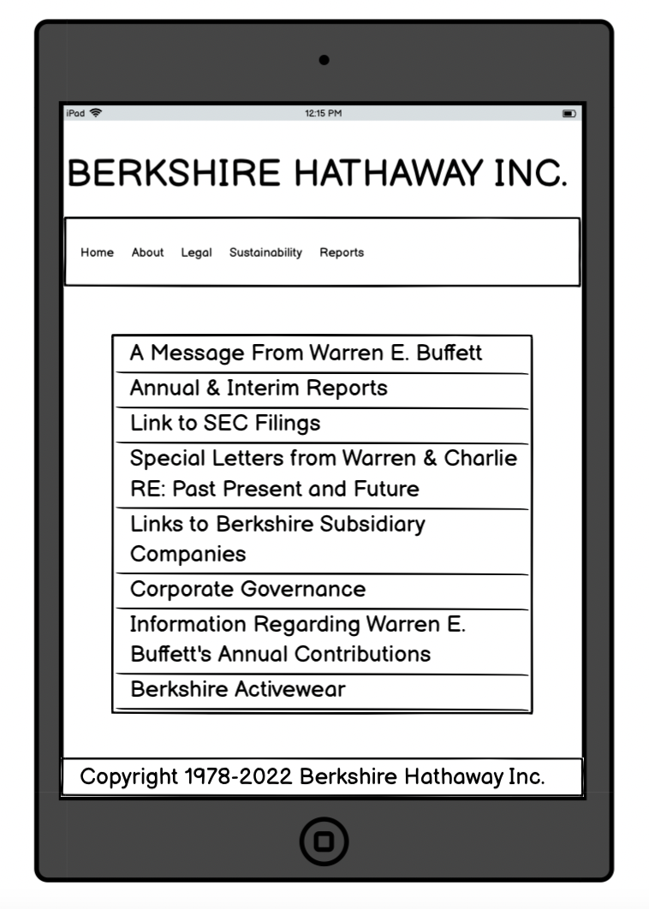

Berkshire Hathaway's website is one of the most poorly designed webistes according
to a lot of website reviewers and hence I decided to take a shot at redesigning this website
(hoping that Buffet buys it off from me!). I redesigned this website using HTML and CSS.
This is how the current website looks like:

Some of the problems that I spotted keeping usability, learnability, and memorability in mind are as follows:
- This is a very basic website without any design elements. There is negligible use of CSS for designing and hence it is not visually appealing and engaging.
- There is no navigation bar and all the information seems to be thrown in the body and footer of the site.
- There is no clear structure to the website and everything on the home page seems scattered and unorganized, which may hinder all the important factors one has to keep in mind such as learnability, usability, memorability and accessibility.
- Important links such as Legal Disclaimer is pushed at the bottom of the site.
- Unnecessary information thrown on the website, incresing its complexity and reducing usability and learnability.
Design prototypes
I first created Low-fidelity Wireframes. I used Balsamiq to create a total of 3 wireframes of the
homepage of Berkshire Hathaway, one for each of the screen sizes - mobile, tablet, and desktop.
The idea is to divide that site into 4 sections: header, navigation bar, body and footer.
Header just contains the name and footer simply contains the copyright information and have no hyperlinks.
Nav bar contains 5 buttons with each of them having the hover effect and are linked to their respective pages.
Finally, the body is also a bunch of 16 buttons stacked vertically with each of them referencing to a link
found in the original site. This also has the hover effect. The wireframes are as follows:



I used Figma to create a 3 high-fidelity prototypes of the homepage of Berkshire Hathaway,
one for each of the screen sizes - mobile, tablet, and desktop. These prototypes are exactly
how I want the redesigned versions to look. For the nav bar, I plan to use the @media Rule in CSS
and set some max width which if met, it would stack all the button from a horizontal layout to a
vertical one. So essentially it will look very similar to the layout observed in the body section
of the page. This I plan to achieve setting display attribute to block. Hover effect is something that
I plan to implement for both the nav bar buttons as well as the buttons in the body section. There is
some amount of padding to be added in the body section to create a gap or distinction between the body
and navbar section on the top and body and footer at the bottom. The prototypes are as follows: